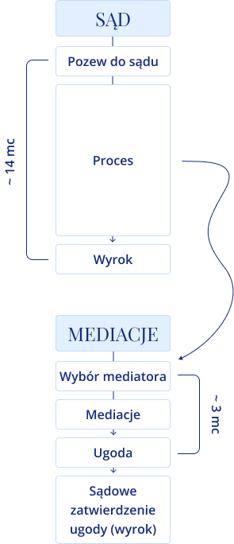
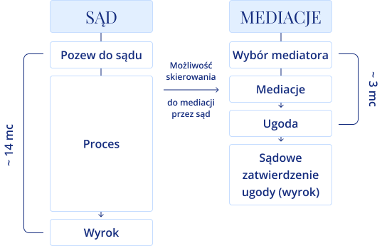
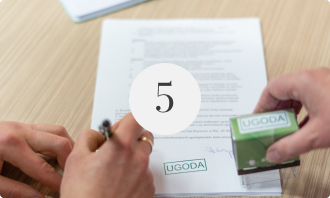

Konflikty. Były, są i zawsze będą. Nie znikną więc trzeba wiedzieć
jak sobie z nimi poradzić.
Bywa, że strony same znajdą rozwiązanie. Czasem pomoże w tym ktoś z bliskiego otoczenia.
A jeśli nie, to co robić?
Pierwsze co przychodzi do głowy to skierowanie sprawy do sądu.
Okazuje się jednak, i coraz więcej osób o tym już wie, że jeszcze istnieje
Mediacja.
Jeżeli myślisz o skierowaniu sprawy do sądu bądź
Twoje postępowanie już się toczy, ta oferta jest dla Ciebie!


Mediacje to korzyści
Dlaczego to rozwiązanie jest rozsądniejsze?
Oszczędzamy czas
Spór w sądzie potrwa wiele miesięcy a nawet
lat – w mediacji może się zakończyć ugodą w ciągu kilkunastu dni.
Oszczędzamy pieniądze
Wybór polubownego rozwiązania sporu jest też wielokrotnie tańszy.
Wystarczy porównać koszty procesu sądowego
wraz z udziałem pełnomocników lub bez z kosztami mediacji.
Zachowujemy poufność
O przebiegu mediacji nikomu z uczestników nie wolno rozmawiać a tym bardziej
wykorzystywać uzyskanych tam informacji.
Mediator działając poufnie zapewni poczucie komfortu i bezpieczeństwa.
Kontrolujemy ich przebieg
W mediacji mamy wpływ od początku do końca na przebieg całego procesui podjęte decyzje.
Oddając sprawę do sądu, oddajemy ją prawnikom i sędziom,
którzy zgodnie ze swoim powołaniem, będą podejmować decyzje za nas.

Mediacje są dobrowolne
Nikogo nie można zmusić do mediacji a osoba bezstronnego
mediatora musi być zaakceptowana przez obie strony.
Stając dobrowolnie raz jeszcze do próby wypracowania ugody
pokazujemy tym samym, że już na samym początku dajemy sobie raz jeszcze szansę.
Chronimy relacje
Rozwiązywanie sporu w sądzie nie sprzyja ochronie relacji.
Mediacja, zachęcając do pracy nad rozwiązaniem konfliktu,
w wielu przypadkach te relacje zachowuje a nawet poprawia.
Czy warto spróbować mediacji? Warto!
Pisemna ugoda zawarta przed mediatorem, po jej zatwierdzeniu przez sąd,
ma moc prawną ugody zawartej przed sądem, jest natychmiast prawomocna
i wykonalna (może podlegać egzekucji).
Zatwierdzenie ugody przed sądem jest zwolnione z opłaty.
Sąd nie daje „gwarancji satysfakcji”.
Przecież gdy zapada sądowy wyrok nie zawsze - nawet strona wygrywająca proces -
jest usatysfakcjonowana z jego treści. To wszystko sprawia, że duży odsetek
mediacji kończy się ugodą. Ugodą - satysfakcjonującym,
wypracowanym przez obie strony rozwiązaniem sporu.
“Najlepszą pracą na świecie jest
jednanie ludzi.
”
Antoine de Saint Exupéry
O mnie
Bogate doświadczenie zawodowe i życiowe pozwala mi ze
zrozumieniem i elastycznie wczuć się w każdą sytuację.
Z wykształcenia jestem inżynierem. Analityczny sposób myślenia bardzo pomaga mi w pracy.
Do mediacji przyprowadziły mnie nieruchomości.
Pracując właśnie w tej branży dostrzegłam i doceniłam siłę dialogu w negocjacjach.
Wielokrotnie, by doprowadzić do szczęśliwego zakończenia transakcji,
byłam rozjemcą w sytuacjach konfliktowych pomiędzy rozwodzącymi się małżonkami czy spadkobiercami.
Zapanowanie nad emocjami stron i poszukanie satysfakcjonującego wszystkich rozwiązania to ogromna satysfakcja.
Jeszcze większą radością jest widzieć jak, wcześniej skonfliktowane osoby znów ze sobą rozmawiają.
To właśnie obserwacja obustronnych korzyści płynących z wypracowywanych porozumień sprawiła,
że ukończyłam studia podyplomowe z mediacji, przeszłam szereg specjalistycznych dodatkowych
szkoleń i odbyłam staż w Stowarzyszeniu Mediatorów Rodzinnych.
Wszystko po to by móc Państwu pomagać w rozmowach o rozwiązaniach. Na tym właśnie polega mediacja.
Obecnie jestem również mediatorem sądowym, wpisanym
na listę mediatorów stałych przy Sądzie Okręgowym w Poznaniu.
Razem ze mną będą do Państwa dyspozycji, jeśli zajdzie taka potrzeba, mediatorzy współpracujący,
eksperci z dziedziny prawa, doradztwa podatkowego i poradnictwa terapeutycznego.
Wszystko po to by móc Państwu pomagać w rozmowach o rozwiązaniach. Na tym właśnie polega mediacja.
Podchodziłem do samych mediacji bardzo sceptycznie i bez wielkiej nadziei na finalne porozumienie.
Same mediacje, ich struktura i subtelny sposób prowadzenia, spowodowały, że emocje na starcie opadły.
Poszukiwanie finalnych zapisów porozumienia poszło bardzo sprawnie. Szczerze polecam.
Artur, 50 lat - Piła
Sytuacja z drugą stroną była bardzo gorąca.
Tematy były poważne a żadne propozycje, wcześniej do niej przesłane, nie były akceptowane.
W mediacji, nie wiadomo w jaki sposób, od samego początku, skupiliśmy się na meritum spraw do rozwiązania.
Udało się osiągnąć coś co rozwiązało poważne problemy.
Jestem pewna, że jeszcze wielu osobom uda się pomóc w ten sposób.
Alicja, 42 lat - Poznań
Traktowałem mediacje jako ostatni, formalny krok
przed i tak pewnie czekającą nas sprawą w sądzie.
Ku mojemu zdziwieniu w ciągu kilku godzin byliśmy w stanie
spisać i obustronnie podpisać zasady „Nowego Ładu”.
Jestem wdzięczny mediatorkom za to, że tak bezboleśnie, profesjonalnie i
z finalnym sukcesem (akceptacją ugody przez sąd), przeprowadziły nas przez tak trudne tematy.
Marek, 48 lat - Trzcianka
Oferta
Rodzaje mediacji z podziałem na obszary działalności
Duży odsetek mediacji kończy się ugodą.
Ugodą - satysfakcjonującym, wypracowanym przez obie strony rozwiązaniem sporu.
Mediacje Rodzinne
Sprawy:
Warunki rozwodu lub separacji
Ustalenie miejsca pobytu dziecka
Kontakty z dziećmi lub wnukami
Alimenty
Sposób wykonywania władzy rodzicielskiej i wiele innych
Płatne zgodnie z
Rozporządzeniem Ministra Sprawiedliwości
z dnia 20 czerwca 2016 r.
w sprawie wysokości wynagrodzenia
i podlegających zwrotowi wydatków mediatora
w postępowaniu cywilnym, to jest:
Prawa majątkowe
W sprawach o prawa majątkowe wynagrodzenie mediatora wynosi 1% wartości przedmiotu sporu,
jednak nie mniej niż 150 złotych i nie więcej niż 2000 złotych za całość postępowania mediacyjnego.
Prawa majątkowe i niemajątkowe
W sprawach o prawa majątkowe, w których wartości przedmiotu sporu nie da się ustalić, oraz w sprawach
o prawa niemajątkowe wynagrodzenie mediatora za prowadzenie postępowania mediacyjnego wynosi za pierwsze
posiedzenie 150 złotych, a za każde kolejne – 100 złotych, łącznie nie więcej niż 450 złotych.
Zwrotowi podlegają udokumentowane
i niezbędne wydatki mediatora poniesione
w związku z przeprowadzeniem mediacji na pokrycie kosztów:
Przejazdów – w wysokości i na warunkach określonych w przepisach dotyczących wysokości oraz
warunków ustalania należności przysługujących pracownikowi zatrudnionemu w państwowej lub
samorządowej jednostce sfery budżetowej z tytułu podróży służbowej.
Wynajmu pomieszczenia niezbędnego do przeprowadzenia posiedzenia mediacyjnego,
w wysokości nieprzekraczającej 70 złotych za jedno posiedzenie.
Korespondencji, w wysokości nieprzekraczającej 30 złotych. W razie nieprzystąpienia stron do mediacji,
mediatorowi przysługuje zwrot poniesionych wydatków w wysokości nieprzekraczającej 70 złotych.
Mediacje Pozasądowe
(bez względu na rodzaj i wartość przedmiotu sporu)
Bezpłatne spotkania informacyjne (30 min.)
Bezpłatne spotkania informacyjne (30 min.)
80 zł (bezzwrotna opłata administracyjna za rozpatrzenie wniosku i pierwsze czynności mediatorki)
120 zł od strony (pierwsze spotkanie indywidualne, oddzielne dla każdej ze stron/60 minut)
150 zł od strony (wspólne posiedzenie mediacyjne/90 minut)
70 złotych od strony (zryczałtowane koszty lokalu za każde posiedzenie
i ewentualnej korespondencji i/lub połączeń telefonicznych)
W przypadku sporu pomiędzy dwoma podmiotami prowadzącymi działalność gospodarczą powyższe stawki
w przeliczniku „x2”.
Kontakt
Nie zwlekaj, umów się na rozmowę i daj sobie pomóc